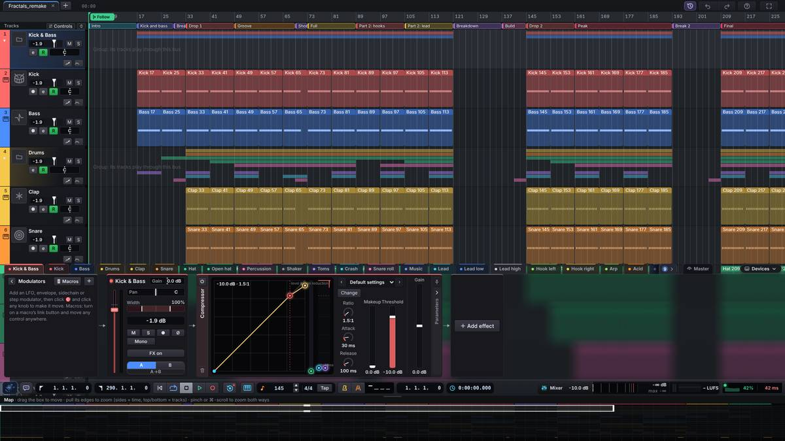

Eight whole looks for AudioLab, each applied to the same real screen: the arrangement with five tracks and clips, the transport, Pro EQ as a display-first device and part of the mixer. Six come from science and engineering (mission control, lab instruments, observatories, technical drawing, Swiss data design, today's glass carried further); two are contrasts (CRT phosphor, and Braun / Teenage Engineering calm). Everything is live: the playhead runs at 145 BPM, meters and the spectrum move, and each card shows how long its drawing takes on your computer.
Nothing in the app was changed. The screens are redrawn in HTML, CSS and canvas at AudioLab's sizes (track headers, device and mixer strip widths from v0.228); they are close, not the app's own code. The glass here is CSS blur, a stand-in for the GL engine.

Each row changes one thing across the whole screen. Click a detail to use it instead of the direction's own; click again to go back. The preview under the rows shows the direction you picked (DS7 until you pick one) with your details, live.
The full write-up with every source is docs/design-languages-research.md in the repository. Claims below come from pages that were opened, except where marked.
Mission software is dense text with units: NASA's own browser framework Open MCT uses a charcoal theme, stacked plots on one time axis and colour only for yellow and red limits (its theme file). Film designers say their screens are "an illustration and a storytelling device" made to look complex (Mark Coleran); the Martian's real NASA screen was "a spreadsheet of events" (Territory).
The FAA's cockpit guidance gives each colour a fixed job (red warning, amber caution, cyan selected, green engaged, magenta target, white scales), says six colours or fewer, and always a second cue besides colour (AC 25-11B). Oscilloscopes repeat one channel colour on trace, knob and readout (Tektronix: CH1 yellow, CH2 cyan, CH3 red, CH4 green).
Webb's images use chromatic ordering: shortest wavelength blue, longest red (NASA). Rainbow maps distort data; perceptual maps such as viridis and magma do not (Crameri et al. 2020, viridis).
backdrop-filter is the dearest compositor effect and re-blurs whenever what is behind it moves (Grida notes, web.dev); MDN says to avoid canvas shadowBlur (MDN). Every glow on this page is a line drawn twice, not a blur.
| Direction | Colours | Long sessions | Cost (estimate) | Drawing on this page |
|---|